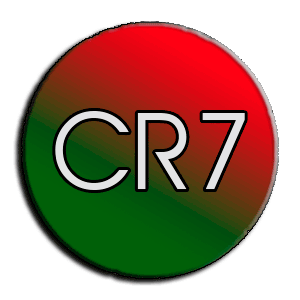
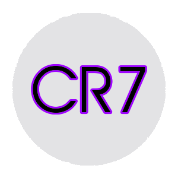

Quién soy
Identificado en los medios de comunicación con el numerónimo CR7, es considerado el mejor y más completo futbolista y goleador del mundo —e incluso de la historia— por un elevado número de personas y prensa vinculadas al deporte, así como también una de las figuras más mediáticas de la actualidad. Es, con 364 goles, el máximo goleador de la historia del Real Madrid Club de Fútbol tras haber superado sucesivamente a grandes e históricos jugadores como Amancio Amaro, Emilio Butragueño, Pirri, Paco Gento, Hugo Sánchez, Ferenc Puskás, Santillana, Alfredo Di Stéfano y Raúl González Blanco, consiguiéndolo en apenas siete temporadas en el club.
Equipos
A lo largo de mi carrera he jugado en estos tres equipos
Sporting Portugal
Fundado: 1 de Julio de 1906Estadio: José Alvalade
18 Ligas
16 Copas de Portugal
1 Recopa de Europa
Manchester United
Fundado: 1878Estadio: Old Trafford
20 Ligas
12 FA Cup
3 Copas de Europa
1 Recopa
1 Copa Intercontinental
1 Mundial de Clubes
Real Madrid
Fundado: 6 de Marzo de 1902Estadio: Santiago Bernabéu
32 Ligas
19 Copas del Rey
11 Copas de Europa
2 Copas de la UEFA
2 Supercopas de Europa
3 Copas Intercontinentales
1 Mundial de Clubes
Experiencia
| Club | Div. | Temporada | Liga | Copas nacionales |
Torneos internacionales |
Total | Media goleadora |
||||||||
|---|---|---|---|---|---|---|---|---|---|---|---|---|---|---|---|
| Partidos | Goles | Asistencias | Partidos | Goles | Asistencias | Partidos | Goles | Asistencias | Partidos | Goles | Asistencias | ||||
|
S. C. Portugal Portugal |
|||||||||||||||
| 1.ª | 2002-03 | 25 | 3 | 6 | 3 | 2 | - | 3 | - | 1 | 31 | 5 | 7 | 0,16 | |
| Total club | 25 | 3 | 6 | 3 | 2 | 0 | 3 | 0 | 1 | 31 | 5 | 7 | 0,16 | ||
|
Manchester United Inglaterra |
|||||||||||||||
| 1.ª | 2003-04 | 29 | 4 | 3 | 6 | 2 | 3 | 5 | - | 1 | 40 | 6 | 7 | 0,15 | |
| 2004-05 | 33 | 5 | 4 | 9 | 4 | 4 | 8 | - | 2 | 50 | 9 | 10 | 0,18 | ||
| 2005-06 | 33 | 9 | 6 | 6 | 2 | 1 | 8 | 1 | 1 | 47 | 12 | 8 | 0,26 | ||
| 2006-07 | 34 | 17 | 13 | 8 | 3 | 1 | 11 | 3 | 5 | 53 | 23 | 19 | 0,43 | ||
| 2007-08 | 34 | 31 | 7 | 4 | 3 | - | 11 | 8 | 1 | 49 | 42 | 8 | 0,86 | ||
| 2008-09 | 33 | 18 | 6 | 6 | 3 | - | 14 | 5 | 3 | 53 | 26 | 9 | 0,49 | ||
| Total club | 196 | 84 | 39 | 39 | 17 | 9 | 57 | 17 | 13 | 292 | 118 | 61 | 0,40 | ||
|
Real Madrid España |
|||||||||||||||
| 1.ª | 2009-10 | 29 | 26 | 7 | - | - | - | 6 | 7 | - | 35 | 33 | 7 | 0,94 | |
| 2010-11 | 34 | 40 | 10 | 8 | 7 | 1 | 12 | 6 | 2 | 54 | 53 | 13 | 0,98 | ||
| 2011-12 | 38 | 46 | 12 | 7 | 4 | - | 10 | 10 | 3 | 55 | 60 | 15 | 1,09 | ||
| 2012-13 | 34 | 34 | 10 | 9 | 9 | 1 | 12 | 12 | 1 | 55 | 55 | 12 | 1,00 | ||
| 2013-14 | 30 | 31 | 9 | 6 | 3 | 3 | 11 | 17 | 5 | 47 | 51 | 17 | 1,09 | ||
| 2014-15 | 35 | 48 | 16 | 4 | 1 | - | 15 | 12 | 6 | 54 | 61 | 22 | 1,13 | ||
| 2015-16 | 36 | 35 | 11 | - | - | - | 12 | 16 | 4 | 48 | 51 | 15 | 1,06 | ||
| Total club | 236 | 260 | 75 | 34 | 24 | 5 | 78 | 80 | 21 | 348 | 364 | 101 | 1,05 | ||
| Total carrera | 457 | 347 | 120 | 76 | 43 | 14 | 138 | 97 | 35 | 671 | 487 | 169 | 0,73 | ||
Sobre mi
Mi padre me puso de segundo nombre Ronaldo, en homenaje al actor y posteriormente presidente de los Estados Unidos Ronald Reagan.
El 7 de septiembre de 2005, mi padre, Dennis Aveiro, murió por una crisis renal a causa del alcohol. Horas después me reuní con el seleccionador de Portugal para comunicar mi intención de jugar el partido contra Rusia para la clasificación para el Mundial de Fútbol de 2006, aunque el técnico Alex Ferguson me permitió regresar a mi ciudad natal para el entierro, por lo que me perdí el partido contra el Manchester City.
Después de dos partidos para la calificación a la Copa Mundial de Fútbol viajé a Indonesia para recaudar fondos por el tsunami que arrasó días antes. Me reuní con el vicepresidente Jusuf Kalla y el presidente de Timor Oriental, Xanana Gusmão para dar una contribución de 120.000 dólares.
Subasté la Bota de Oro de 2011 para recaudar fondos para los niños de Gaza, después de que la Franja de Gaza fuera bombardeada duramente por las tropas israelíes
Entre mis aficiones está pasar tiempo en la naturaleza, en parajes como los del vídeo junto a este texto.
Hablo portugués, inglés y español.
Contacto

